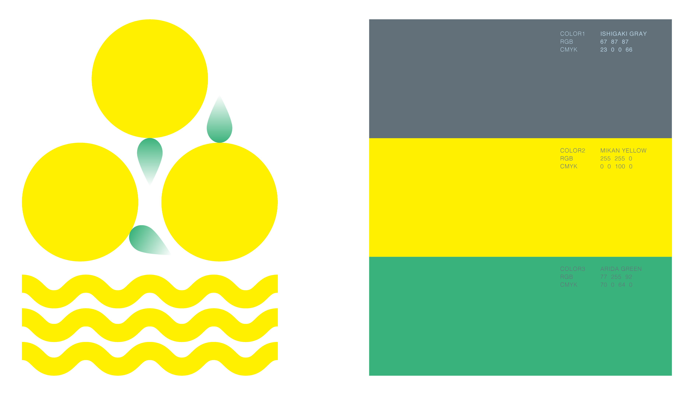
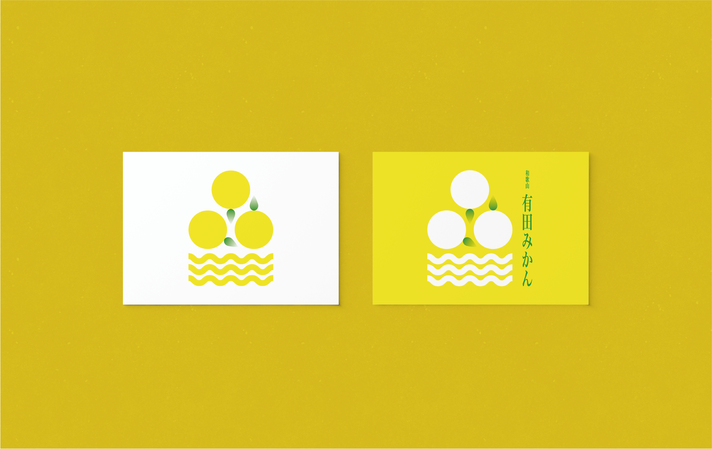
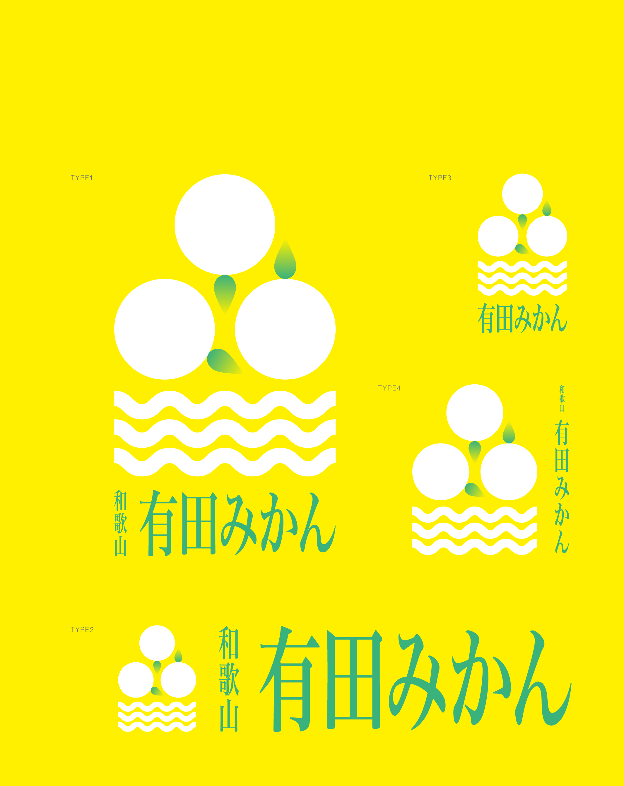
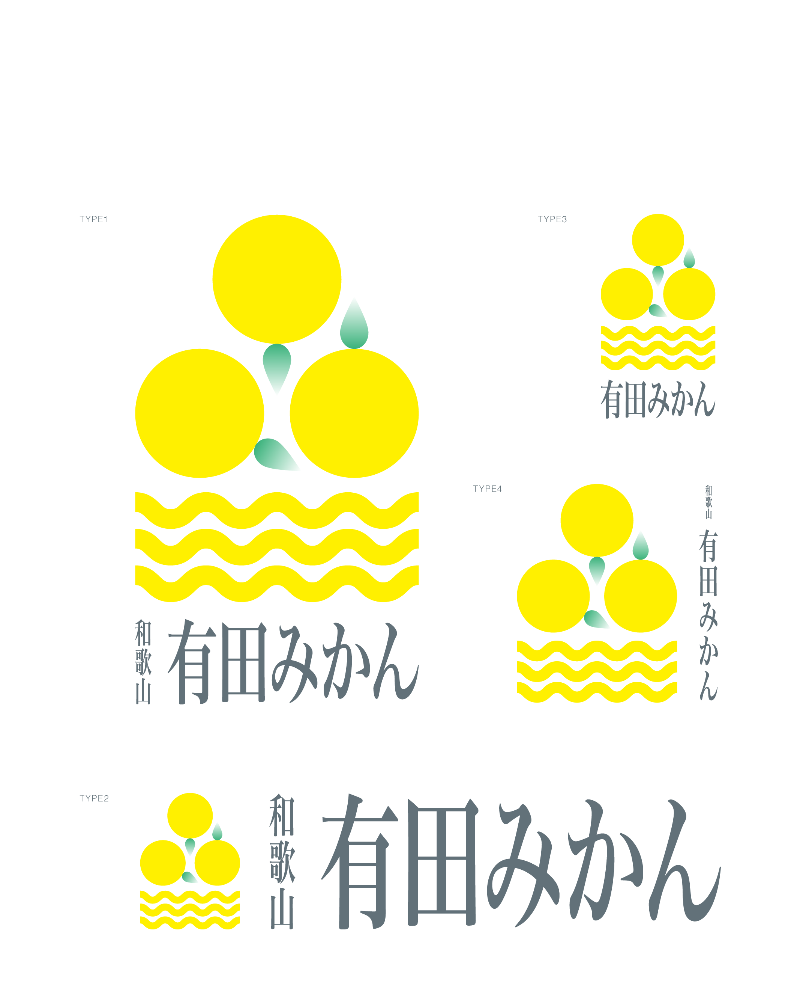
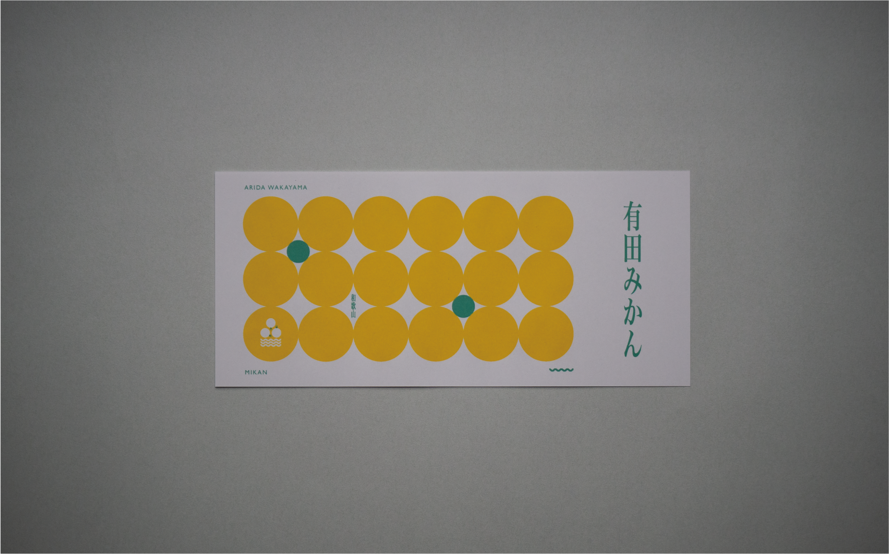
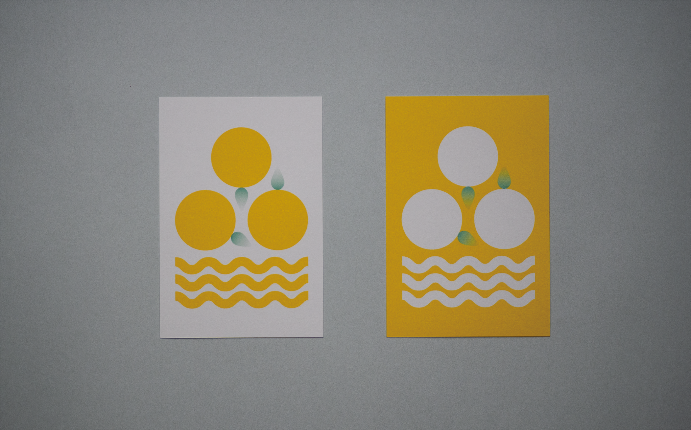
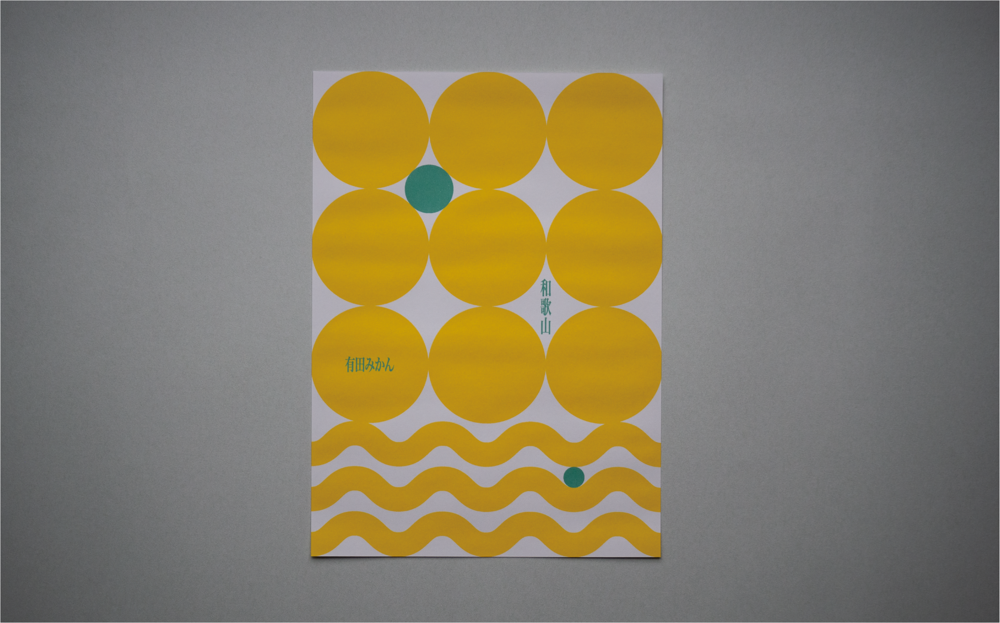
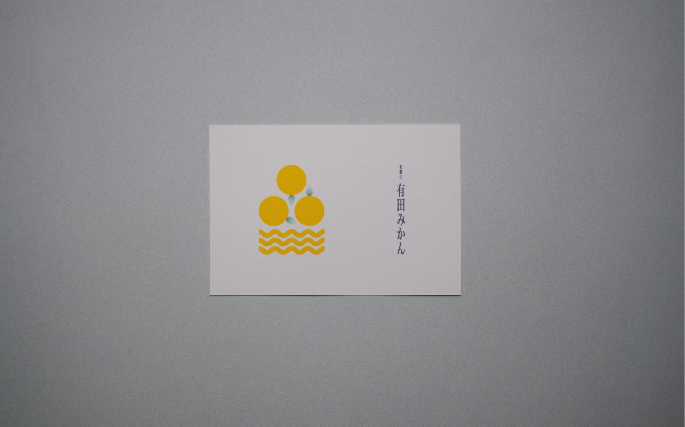
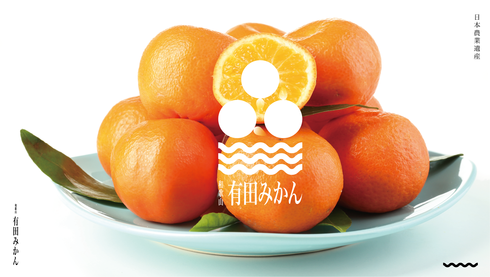

有田みかん栽培の日本農業遺産認定を受けたための有田ブランドのロゴデザイン。和歌山県有田市のみかん栽培にを支える三つの要素をロゴの中に込めた。 有田みかん栽培システムの重要な三つの要素として、「有田の自然環境」、「農家の方の栽培技術」、「多様な出荷組織」があり、どれか一つでも欠けてしまうと崩れてしまうことを未完に見立てた三つの円で表現した。さらには円の下部には「有田の自然」要素である、海の波、山並み、石垣の栽培地を表現した波線を加えた。 有田みかんの既存の箱やイメージから有田＝黄色というイメージが消費者からの視点で存在し、尚且つ他の地域のみかんはオレンジ色を多く使っているため、有田ブランドの唯一無二性を表現するために黄色とした。

「有田の自然環境」、「農家の方の栽培技術」、「多様な出荷組織」
支え合う三つの要素をロゴデ表現。
有田みかんを象徴する黄色。
ロゴを用いたデザインの展開。






